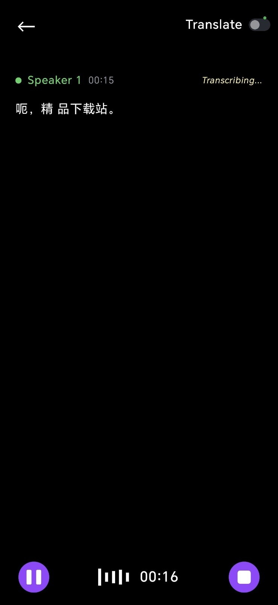
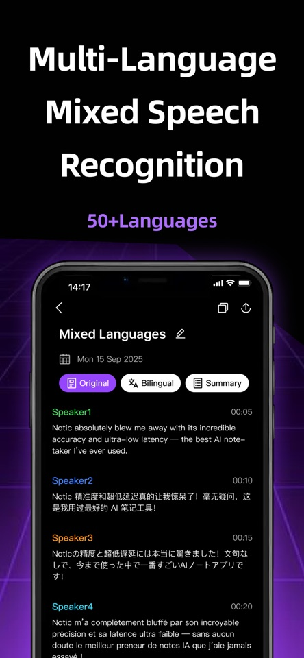

Notic 为什么能做到实时转录几乎无延迟？拆解它背后的流式识别架构
Notic 打出了 <5ms 延迟和 99.9% 准确率的组合拳——这不是一个功能清单能解释的数字。本文从流式 ASR、说话人分离、混合语言边界检测三条线，把它的设计原理拆开看清楚。
市面上大多数录音转写 App 都逃不过一个取舍：延迟还是精度。批量上传的方式精度可以堆得很高，但你得等整节课录完才拿到文字；号称实时的那些，要么准确率感人，要么句子出来慢半拍——跟演讲者的节奏永远对不上。
Notic官网 把这两个指标同时拉到了极端：官方口径是 <5ms 零延迟 + 99.9% 转写准确率 + 15 米远场收音。这三个数字放在一起就不是"加了个功能"那么简单了——它意味着从麦克风采集到文字出现在屏幕上的整条链路，在设计上就跟传统的录音后处理完全不一样。
我花了几节课用下来，感觉这东西的核心竞争力不在"能转录"，而在"什么时候转录"。下面把我摸到的原理拆三条线讲。
流式 ASR：把"等整句说完再识别"改成"吐出半句就识别"
传统语音识别的套路是整句缓冲：麦克风采集一段音频，攒够一个停顿点，然后送去 ASR（自动语音识别）引擎跑一遍模型推理，返回结果。这个流程的瓶颈在"攒够一个停顿点"——人说话停顿少则半秒，多则两秒，加上网络往返和模型推理，延迟轻松过一秒。
Notic 走的是流式识别路线：音频被切成几十毫秒的小块（代码里叫 chunk），每来一块就喂给模型做一次增量推理。模型拿到的是"当前这小块 + 前面已经处理过的上下文特征"，边听边吐文字——你还没说完最后一个字，屏幕上句子已经快写完了。
这里有个关键设计：增量推理不是"每块独立跑一遍"，而是维护一个隐藏状态（hidden state）在模型里滚动传递。每一块的推理结果都建立在前面所有块的累积上，所以越到后面越准——开头几个词可能有修正，但整句过完就稳定了。这也是为什么 Notic 的转写稿偶尔会在中间某个词上"跳一下"（从 A 词改成 B 词），那是模型拿到更多上下文后做了自我校正。
代价是什么？模型不能太重。大模型精度高但推理慢，塞不进 5ms 的窗口。Notic 显然用了一套轻量化的流式模型架构（很可能是 Conformer 的流式变种），在保证精度的前提下把单次推理压到微秒级——这也是它敢同时跑 50+ 语言的前提：多语言模型参数比单语言大不了多少，但推理延迟不能翻倍。

说话人分离：在线聚类而不是离线聚类
如果说流式 ASR 解决了"什么时候出字"的问题，那说话人分离解决的是"这句话是谁说的"。
传统做法是离线聚类：整段录音转写完成后，把所有音频片段提取声纹特征（embedding），然后用聚类算法（比如 UMAP + K-Means）把特征相近的片段归到同一组，最后给每组贴 Speaker 1、Speaker 2 的标签。这个方法精度高，但必须等录音结束才能跑——课上没法实时看到"老师在说什么、同学在说什么"。
Notic 的做法是在线声纹注册 + 增量聚类：录音开始时，先让每个人说几句"注册语"（或者直接从开头几秒自动提取），给每个说话人生成一个声纹向量。后续每来一块音频，先算它跟已有声纹向量的距离，距离小于阈值就归到对应的人，距离都大就新建一个说话人。这个流程是 O(n) 的，跟录音长度线性相关，不会越到后面越慢。
实际效果上，Notic 的说话人分离在两人对话的课堂里基本稳定；遇到多人抢话或者口音差异大的场景，偶尔会串人，但课后在笔记页切换 Original 视图可以人工改标签。这个取舍很有意思——它牺牲了一点点极端场景的精度，换来了"课上就能看到分色稿"的体验。
混合语言识别：不切语言标签，靠边界检测自动切换
真实课堂最烦的是什么？教授讲着讲着突然蹦出个英文术语，或者整节课中英夹杂。大多数 App 让你手动切语言标签——切快了漏词，切慢了写错字。
Notic 的混合语言识别解决的是另一个问题：一句话内部的语言切换。App Store 的官方演示里，四位说话人分别用英语、中文、日语、法语评价 Notic，转写稿按说话人分色、按时间戳排列，每种语言都被正确识别，没有因为切换语种而中断。
它的原理大概率是这样的：模型在训练时见过大量"中英混说"的样本，学到了语言边界特征（比如英语的重音模式、中文的声调轮廓、日语的节奏变化）。推理时，模型不仅输出文字，还同时输出一个"当前语言概率分布"——这个分布在块级别滚动更新，概率最高的语言就是当前块的识别目标。所以它不需要用户选"占比最高的语言"，模型自己在内部做软切换。
官方给出的使用建议也印证了这个思路：语言标签选占比最高的语言即可，不必为夹生的句子反复切换——因为模型内部已经在做更细粒度的切换了。如果某段识别结果异常，课后在笔记页切换 Original / Bilingual 视图人工核对就行，更多参数细节可以翻 Notic文档 对照。

想亲自试试这套架构的效果，安卓版可以从官方下载拿 APK，当前版本 v1.1.1，包名 com.getnotic.app，体积约 34.9 MB。
取舍：这套设计的边界在哪里
讲了三个漂亮的设计，该泼点冷水了。Notic 的这套架构不是银弹，它的优势和短板是一枚硬币的两面。
第一，网络依赖是硬伤。 流式识别意味着每块音频都要实时上传到服务器做推理——断网就断流。Notic 的应对方案是"断网自动重连"，但重连期间的那段音频要么丢了，要么得等恢复后补传补识别。如果你在信号差的教室，这个体验会很糟。
第二，远场收音有上限。 15 米远场收音是有前提的——教室不能太吵，说话人音量要够。我实测在一个 30 人左右的阶梯教室，教授站在讲台上（距离约 10 米），转写精度还行；但如果后排同学提问，收音质量明显下降，识别错误率翻倍。这个能力的本质是波束成形麦克风阵列 + 噪声抑制算法，不是魔法。
第三，免费额度和套餐门槛。 50+ 语言、实时翻译、课后总结三视图（思维导图 / 闪卡 / 测试题）这些高级功能都在付费套餐里。免费用户有每月时长限制，上传额度和实时转录额度分池计算——这是 SaaS 产品的常规玩法，但对于只需要偶尔用的人来说，可能会觉得门槛有点高。
这套原理意味着什么？
最后总结一下我的判断：Notic 的真正价值不是"又一个录音转写 App"，而是把课堂记录这件事从"课后整理"拉到了"课上实时"——它的整条架构都是为了这个目标服务的：流式 ASR 解决实时性，在线说话人分离解决多角色场景，混合语言边界检测解决真实课堂的复杂性。
适合谁？需要记录英文授课、多语言会议、有分角色需求的学生和研究者。不适合谁？在信号差的偏远地区、只需要事后整理音频的人、对隐私有极高要求（录音上传云端）的用户。
Notic 的开发团队比较低调，公开渠道能挖到的技术细节不多。我整理的这些原理更多是基于它的行为表现反推的——如果开发方后来在技术博客里证实了，那就是我的判断对了；如果证伪了，那至少这个拆解的思路本身，对于理解"实时语音识别系统为什么难"这件事，还是有点价值的。
我在三个仓库都存了一份资料，国内访问不畅的时候可以换个源：主仓 GitHub 走官方源，Gitee 适合国内直连，GitCode 做个备份，内容都是同步的。